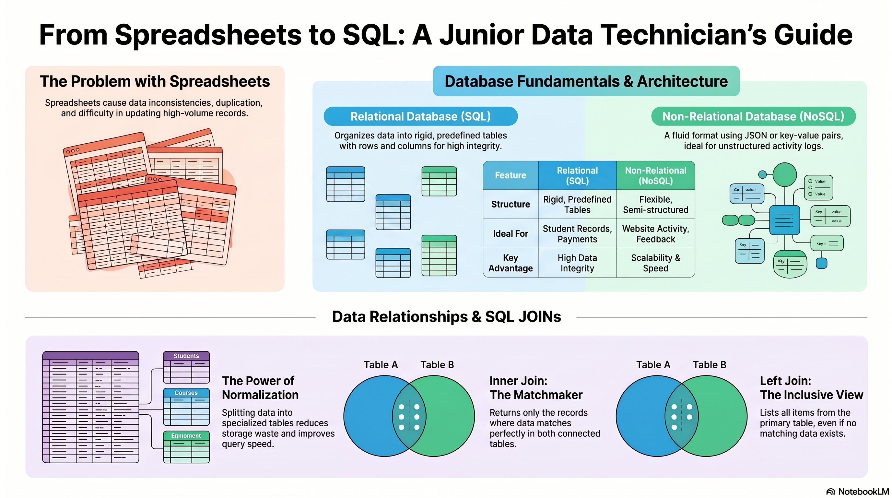
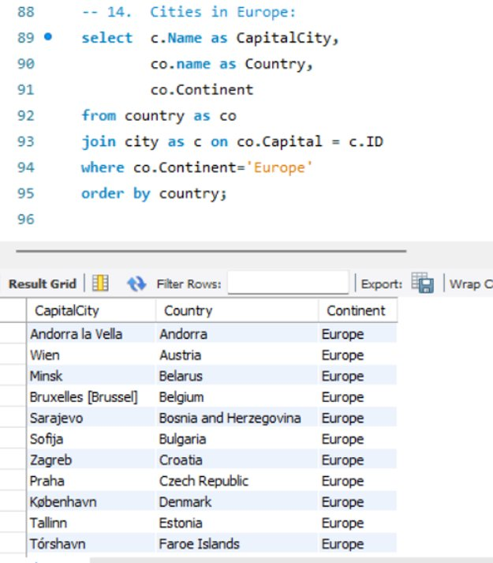

Projects
A visual guide exploring why relational databases outperform spreadsheets for high-volume data, covering SQL vs NoSQL architecture, normalisation, and the core JOIN types every data technician needs.

Infographic created with NotebookLM — database fundamentals, SQL vs NoSQL architecture, normalisation, and JOIN types.
A practical MySQL query joining a country table to a city table to extract every European capital city, filtered by continent and sorted alphabetically by country.

MySQL Workbench — query #14 from the Data Bootcamp SQL repository. Returns capital cities across all European countries, ordered by country name.
country table to the city table on the capital city ID, combining data from two sources in one result.c.Name as CapitalCity) for clarity in the result grid.